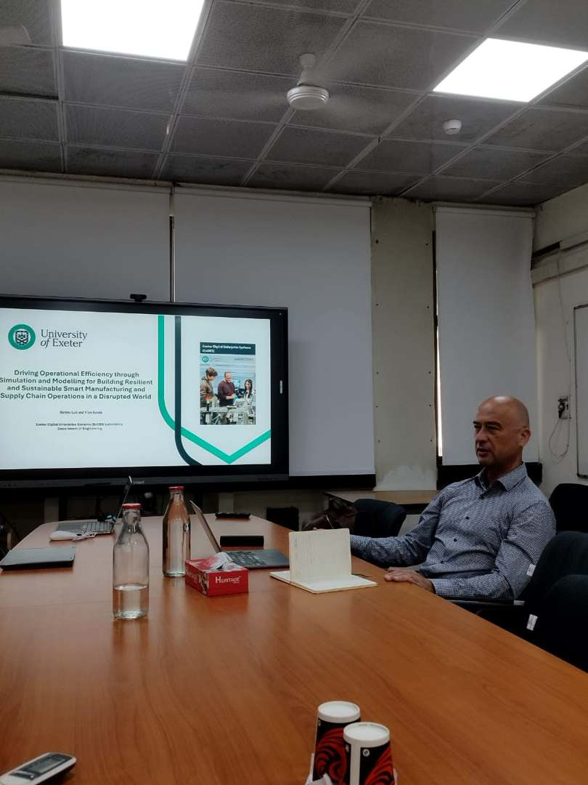
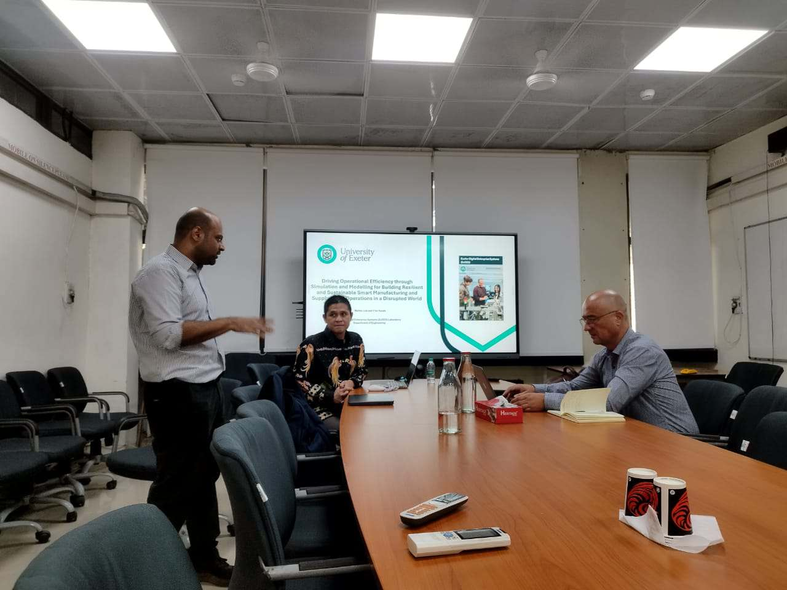
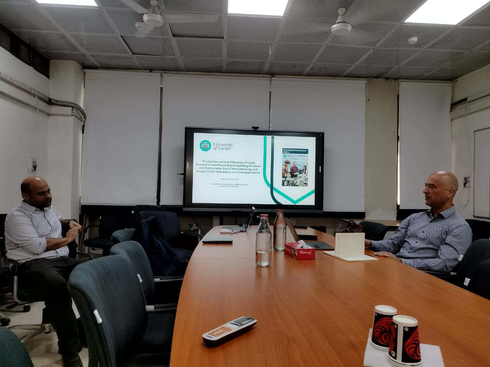
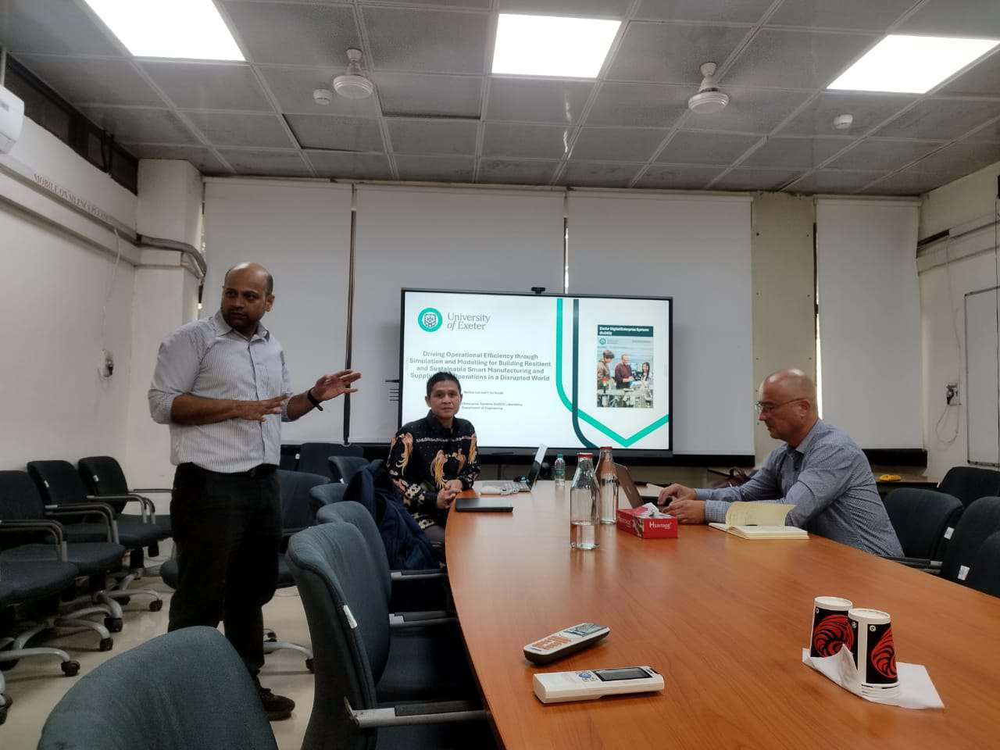
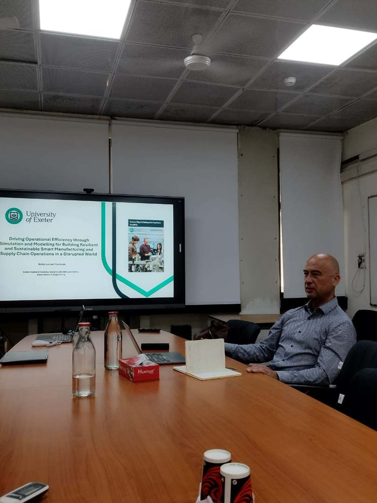
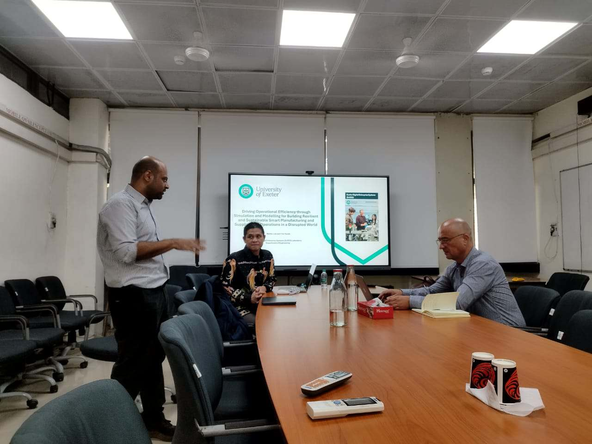
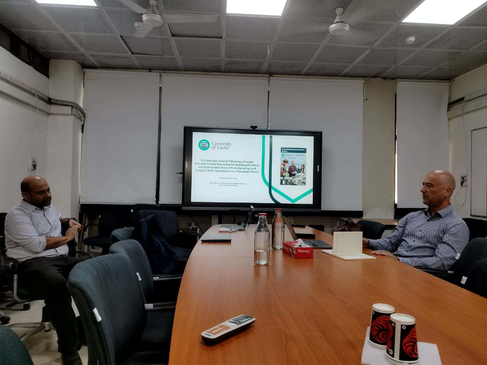
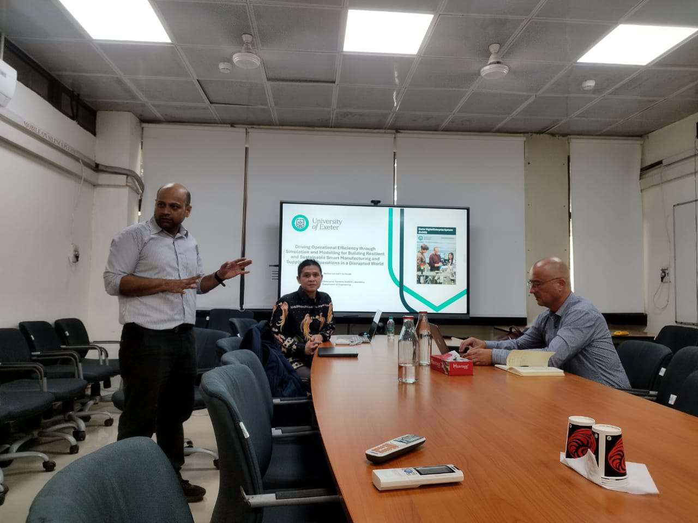

.jpg) 







The IEOR Group successfully hosted an expert talk last Tuesday, “Driving Operational Efficiency through Simulation and Modelling,” featuring distinguished speakers from the University of Exeter, UK. The event provided valuable insights into how digital technologies like digital twins are creating more resilient and sustainable manufacturing and supply chain operations.
Professors Voicu Ion Sucala and Dr. Martino Luis captivated the audience with real-world case studies demonstrating the practical application of simulation models. They illustrated how these tools are crucial for optimising processes, predicting disruptions, and implementing sustainable solutions in a volatile world.
Key highlights from the talk included: (1) Life-Saving Logistics - A compelling case study on using simulation to optimise blood supply chain logistics, ensuring critical resources reach their destination efficiently. (2) Sustainable Systems - Insights into modelling port operations and transportation networks to reduce environmental impact while improving throughput. (3) Manufacturing Efficiency - Practical examples from the beverage industry showed how Discrete Event Simulation (DES) can significantly boost production line efficiency. (4) The Digital Twin Revolution - The speakers presented groundbreaking work on developing digital twins for discrete manufacturing and assembly processes, allowing for virtual testing and optimisation before physical implementation.
The event concluded with an engaging Q&A session, where attendees discussed the challenges and opportunities of integrating simulation technologies into existing systems.